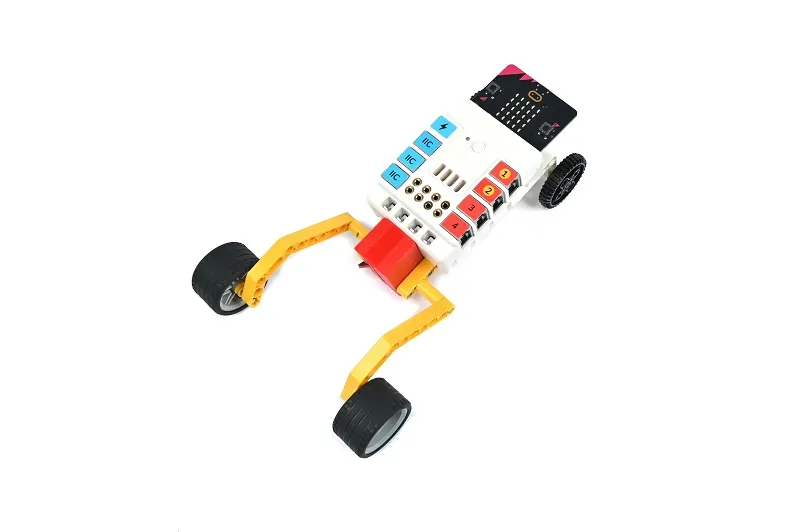

Segundo Robot
Este es el resultado que debería tener vuestro robot al terminarlo, a continuación os muestro todo lo que necesitáis para construirlo.
Ensamblaje
Contar las piezas, deberíais tenerlas todas, incluidas las pequeñas. El microbit os lo daré a parte cuando hayáis terminado el robot.
Pasos
Paso 1
Sí, lo rojo es uno de los motores.
Paso 2
Paso 3
Paso 4:
Paso 5
Paso 6
Paso 7
Paso 8
Paso 9
Paso 10

Paso 11
Paso 12
Paso 13
¡Finalizado!
Conexión

Ahora es cuando conectamos el motor al pin M1
Programación
Vamos a crear un nuevo proyecto (Da igual el nombre, pero tenéis que saber cual es)
Makecode

Ahora SI vamos a instalar una extensión que vamos a necesitar
Buscamos "Nezha" y la instalamos, la PRIMERA, y SÓLO la PRIMERA
Este es el código resuelto para que al presionar el botón a, se encienca el motor al máximo, por otro lado
el botón b lo apaga. Aquí os dejo el enlace para que podáis descargarlo y cargarlo en vuestro microbit.
NOTA: La robótica y la Programación son para experimentar, así que os animo a que probéis a cambiar los valores y ver qué pasa.
Por ejemplo que se encienda el motor al agitar el microbit, o que se apague al tocar el logo.., etc.
Glosario

Aquí os dejo un pequeño glosario para que entendáis mejor el código que habéis visto antes.
En este caso Set motor M1 se refiere a : establecer el motor del pin M1 a la velocidad deseada. En este caso es 100% pero podrías cambiarlo a cualquier otro valor entre -100 y 100.
Stop Motor M1 se refiere a : detener el motor conectado al pin M1., es decir, apagarlo.